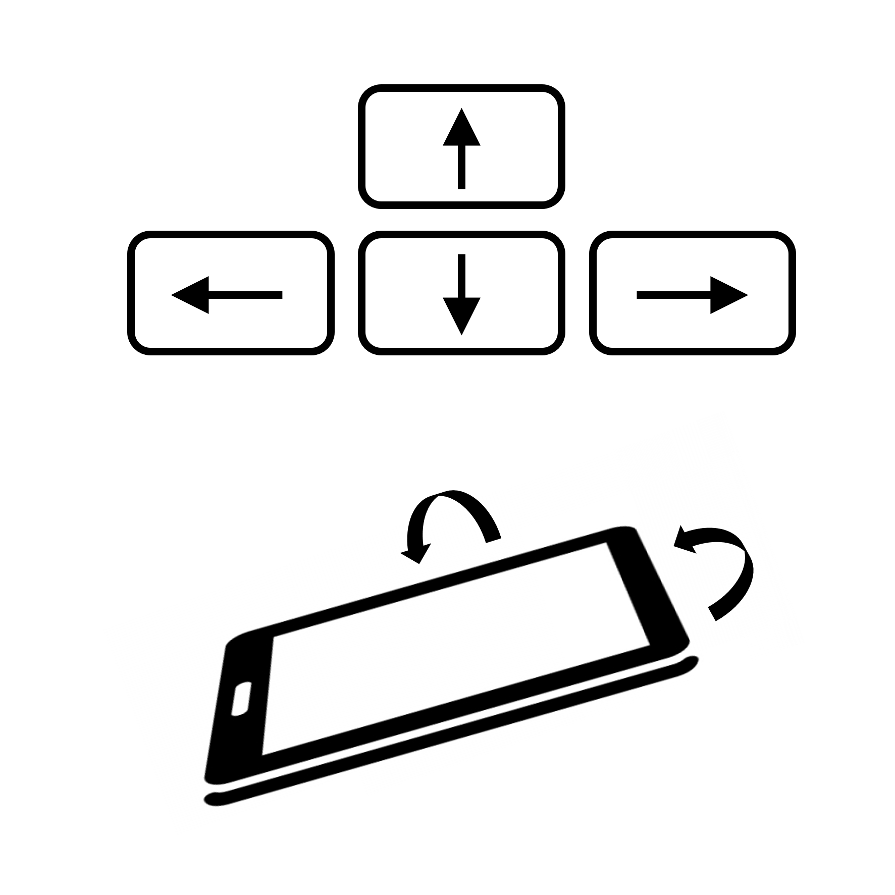

HI 0
SCORE 0
GAME OVER
α-wave sync lost
Flow with the α-waves
α-waves
- sync and relax -
Life Up!
© 2026 ponde3110
START
🔊
?
✕
The Ball — Control
Dark Telu — Life ↓
Art Vata P — Life ↑

Start = Neutral & 50k = Life ↑
Scan to Share via QR